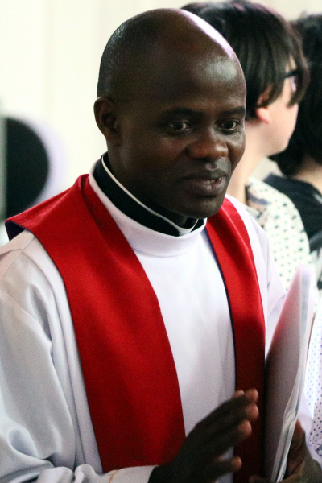

Paroisse Saint-Paul de Senneterre Feuillet paroissial du 17 au 30 juin 2024
Notre Père
Je dirai « NOTRE PÈRE » si je ne refuse pas d’aider les pauvres, car IL s’identifie à eux.
Je dirai « QUI ES AUX CIEUX » si je ne refuse pas la vie de l’au-delà, la création du Père dans l’unité et la diversité.
Je dirai « QUE TON NOM SOIT SANCTIFIÉ » si je travaille à l’annoncer à tous les peuples.
Je dirai « QUE TON RÈGNE VIENNE » si je m’implique à y travailler.
Je dirai « QUE TA VOLONTÉ SOIT FAITE SUR LA TERRE » si je sais voir la souffrance de mes frères et sœurs et m’efforce d’y remédier.
Je dirai « COMME AU CIEL » si je ne m’éloigne pas de tout ce qui pourrait me faire connaître la vie de Dieu.
Je dirai « DONNE-NOUS AUJOURD’HUI NOTRE PAIN DE CE JOUR » si je travaille à ce que tous les enfants de la terre aient la nourriture nécessaire à leur survie.
Je dirai « PARDONNE-NOUS NOS OFFENSES » si je reconnais que Dieu seul peut le faire.
Je dirai « COMME NOUS PARDONNONS AUSSI À CEUX QUI NOUS ONT OFFENSÉS » si avant de prier, je sais me réconcilier avec mon frère, ma sœur que j’aurais offensés.
Je dirai « ET NE NOUS SOUMETS PAS À LA TENTATION » si j’accepte mes faiblesses et sais les reconnaître devant Dieu.
Je dirai « MAIS DÉLIVRE-NOUS DU MAL » si j’accepte que le mal existe et que je peux l’éviter.
Je dirai « AMEN » à ma prière si je suis sincère et crois que Dieu peut m’exaucer.
Auteur inconnu
Pourquoi Jésus nous a-t-il donné le sacrement de l’Eucharistie ?
La réponse courte : « Pour aller au ciel. » Oui, Jésus se donne à nous dans l’Eucharistie pour que nous puissions aller au ciel. C’est ce que disait le jeune Carlo Acutis, mort en 2006 à l’âge 15 ans, qui sera bientôt déclaré saint. Nous avons avantage à nous mettre à l’école des saints et des saintes. Sur la route qui mène au ciel, ils sont nos grands frères et nos grandes sœurs. Le témoignage de leur amour du Christ et du prochain devient une lumière sur la route vers le ciel.
On ne peut séparer l’Eucharistie de l’amour du prochain. Le contraire serait un non-sens. Jésus se donne à nous dans l’Eucharistie pour que nous puissions mieux l’aimer dans la personne de notre prochain. Dans l’Eucharistie, c’est tout l’amour du cœur de Jésus qui nous est donné. À l’exemple de Jésus qui donne au suivant tout l’amour qu’il reçoit du Père, nous sommes invités à donner au suivant tout l’amour reçu de Lui dans l’Eucharistie. C’est dans ce sens qu’il nous faut comprendre une expression de l’abbé Maurice Zundel lorsqu’il disait qu’« on ne communie jamais pour soi, mais pour les autres et pour eux. ». On communie pour mieux aimer les autres.
À l’Eucharistie, n’est-ce pas un ENSEMBLE que nous sommes appelés à être pour réaliser le vœu de Jésus ? Le trésor de l’Eucharistie, c’est ensemble qu’il nous faut y accéder et non pas chacun pour soi sans le souci de nos frères et sœurs. C’est ensemble qu’on marche vers le ciel.
Père Jean Dici
L’Équipe de la Joie
Notre mission est d’apporter de la joie aux personnes de notre entourage, surtout celles qui sont seules ou malades, par des visites, des appels téléphoniques, en soulignant les fêtes et toutes initiatives pour contrer l’isolement de nos aînés. Nous avons besoin de bénévoles pour remplir ce mandat.
Si vous êtes intéressé(e)s à joindre l’Équipe de la Joie, vous pouvez donner votre nom au secrétariat au 819-737-2045. Merci !
Capitation 2024
Afin de garder notre Église bien vivante, votre don est une façon de la conserver au niveau financier pour s’assurer un lieu de culte accueillant et sécuritaire.
Vous pouvez également faire vos dons via la Poste en les adressant à La Fabrique St-Paul, 700, 8e Avenue, Senneterre, J0Y 2M0.
Heures d’ouverture du secrétariat
Lundi, mardi et mercredi : 9h30 à 12h30

Vacances de notre curé
Dans la dernière semaine de ce mois, notre curé ira en vacances dans sa famille au Burundi. Que nos prières l’accompagnent au cours de ce long périple, tant à l’aller qu’au retour, ainsi que durant son séjour là-bas. Que le Seigneur le garde et le comble de ses bienfaits. Bon voyage !
Revenus du 29 mai au 9 juin
Quêtes
561,25
Prions en Église
22,30
Lampions
136,00
Capitation
160,00
Agenda liturgique du 15 au 30 juin 2024
Sam 15
Pas de messe aujourd’hui
Dim 16
10h30
Messe à Lebel-sur-Quévillon
16h00
Messe :
Gilberte LaflammeAngéline Corbeil Karine DufourDe la famille Bertrand LebelLa famille
Lun 17
16h00
Messe :
M. et Mme Rosaire BoulianneGilbert
Mar 18
Congé de l’abbé Laurent
Mer 19
15h00
Messe :
Régine PrévostUne paroissienne
Jeu 20
15h30
Messe à Barraute
Ven 21
15h30
Messe à La Morandière
Sam 22
Pas de messe aujourd’hui
Dim 23
9h30
Messe à La Morandière
11h00
Messe à Barraute
16h00
Messe :
Antonia et Armand LerouxPâquerette et Victor Rose Carrier, Paul Leroux, André et SylvieÉmilienne et famille